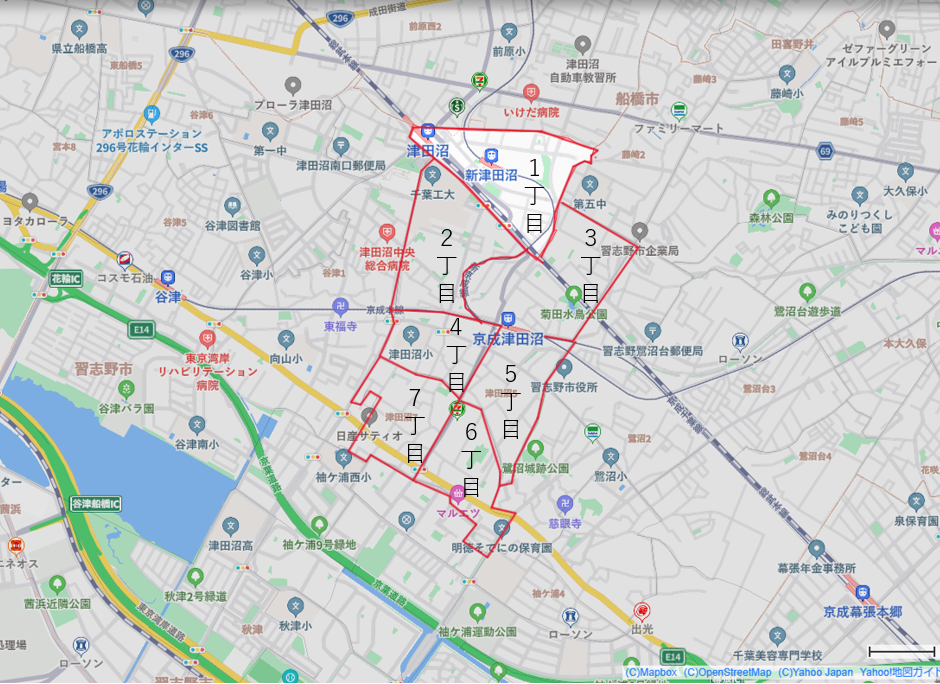
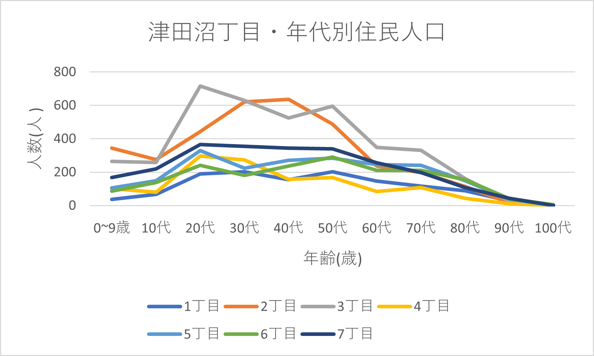
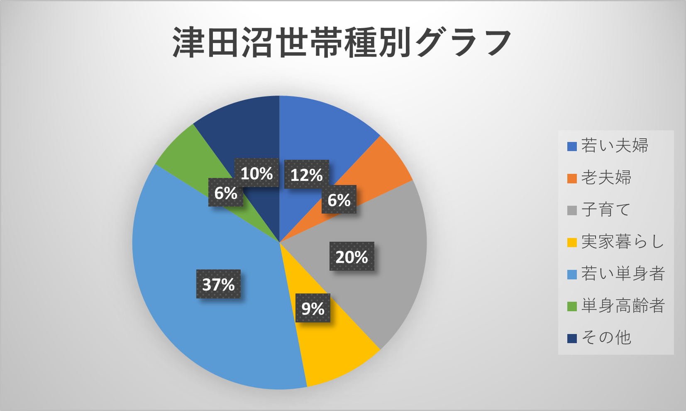
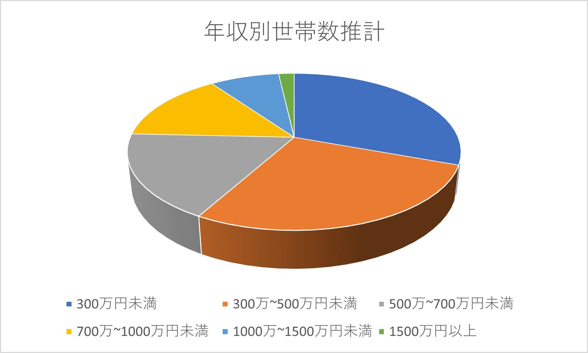
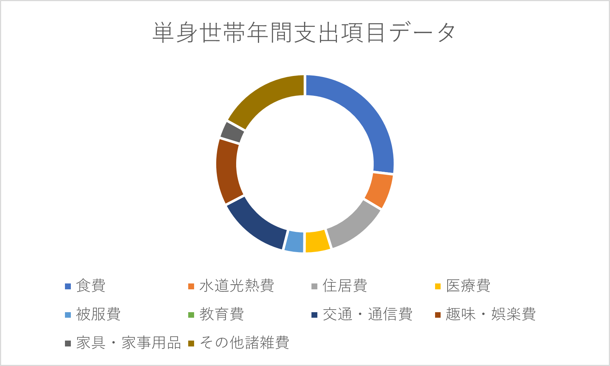
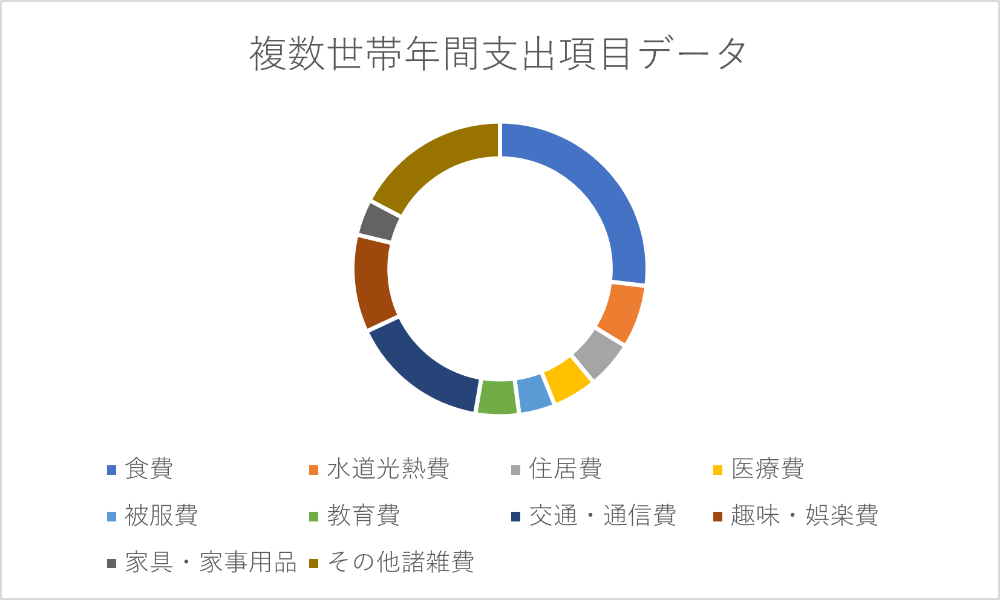

住民情報
津田沼の住民人口は千葉工業大学周辺から京成津田沼駅にかけて位置している2丁目と3丁目に戸建て住宅や中低層マンションなどの集合型住宅が密集しているため多くを占めており、特に20代は2丁目、40代は3丁目に集中しています。 津田沼駅の東に位置している1丁目は既に商業施設が多くの土地を占めているため、人口は約1200人と一番少ないです。世帯種では若い単身者の37％が一番多く占めており、若い夫婦や子育てをしている世帯が併せて32％占めています。実家暮らしや高齢者が比較的少ない地域となっています。
  世帯情報
津田沼の平均世帯年収は300万円未満が約30%であり、500万円未満が60%弱、700万円未満が約75％、1000万円以上が約2.5%になっています。全国平均世帯年収は503万円となっており、千葉県全体の平均世帯年収は532万円、津田沼の平均世帯年収が551万円となっています。津田沼の平均世帯年収は全国平均よりも48万円、千葉県の平均よりも19万円上回っており、千葉県336駅中62位になっています。世帯種で一番多くの割合を占めている単身世帯の平均年間支出額が約211万円であり、千葉県336駅中31位となっています。また、複数世帯の平均年間支出額が約378万円となっており、千葉県336駅中29位になっています。単身世帯・複数世帯共に支出項目は食費が約25％と一番多く占め、被服費・家具用品が支出割合が少ない傾向があります。
  考察
商店街やアーケードが生活の中心にあり、生活と経済が密接している津田沼では、津田沼駅から京成津田沼駅にかけての地域に人口が集中しており、京成津田沼駅よりも南側は人口が少ない傾向があるため、どちらの駅からも近くて人口が多い2丁目、3丁目が津田沼のメインマーケットになっていることが考えられる。また、若い単身者や若夫婦が割合の多くを占めているが平均世帯年収が全国、千葉県内どちらも上回っており、平均年間支出額が単身世帯・複数世帯共に千葉県内上位10%以内に含まれていることから、安価な料金設定も求められるが平均よりもやや高めの料金設定も比較的求められやすい地域であることが推測できる。さらに高齢者の割合が約1割と少ないことから、高齢者ではなく若齢者に照準を合わせることで幅広い顧客層から需要を求められるだろうと考えられる。しかし、視点を変えてみると既に若齢層に向けたサービスは充実していると考えると、1割程度の高齢者にニーズを合わせることで顧客層は絞られるが、需要が高いサービスを提供できる可能性も考えられる。業種については、生活に必要不可欠な衣食住のうちから考えることで流行り廃りに左右されずに長い期間需要があるサービスを提供できると考えられるが、津田沼において被服費、家具用品への支出割合が少なく、食費に支出額が偏っていることから飲食に関する物販やサービスの需要が高いと推測できる。